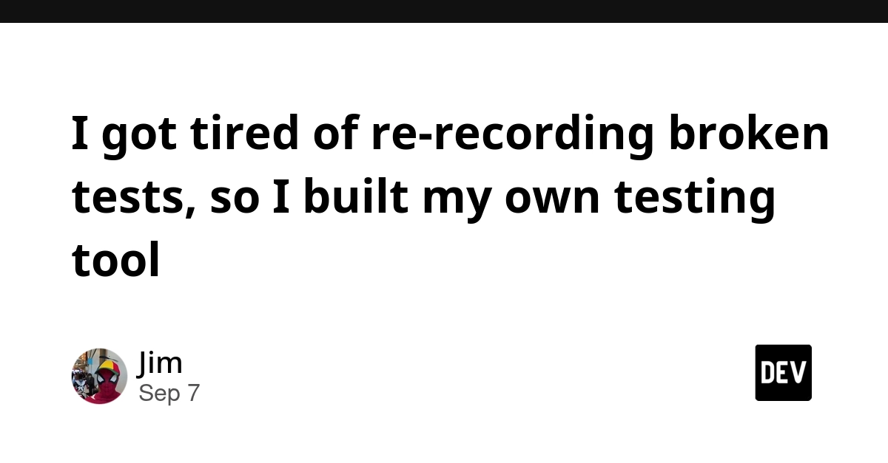
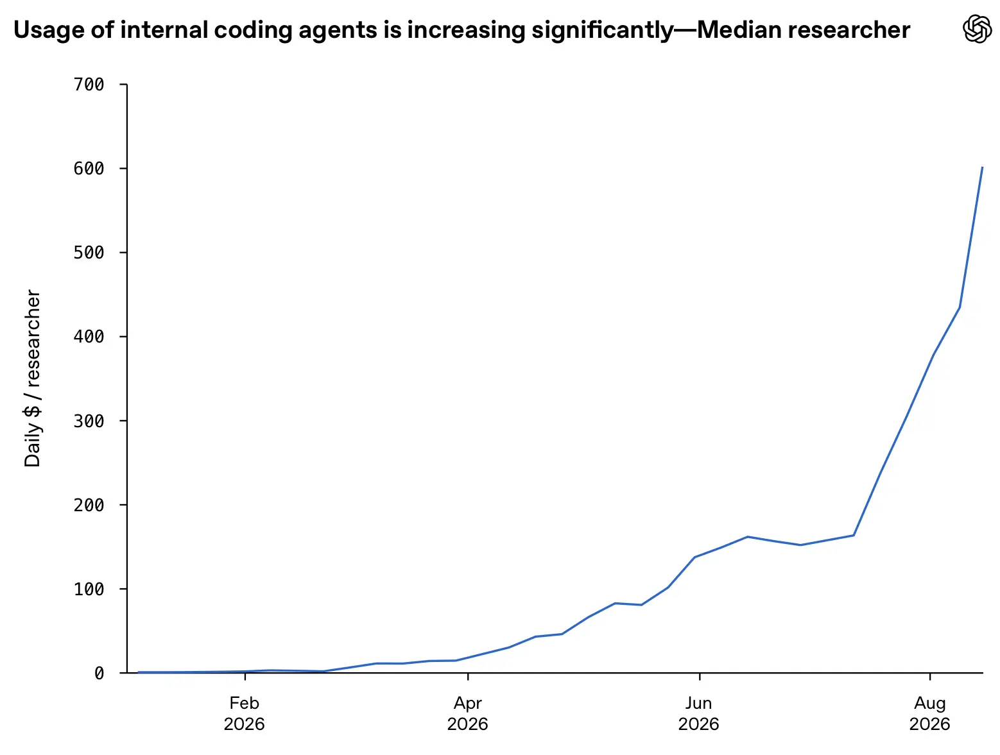
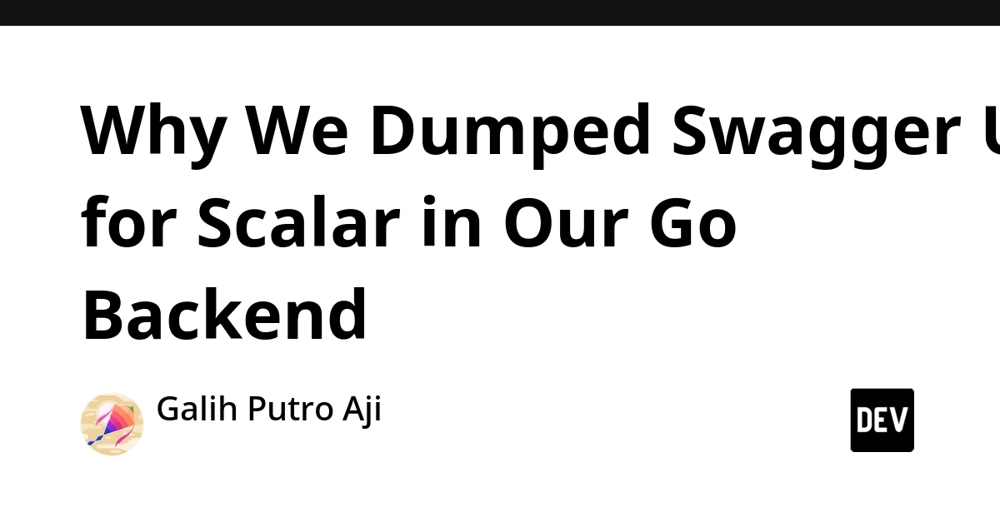
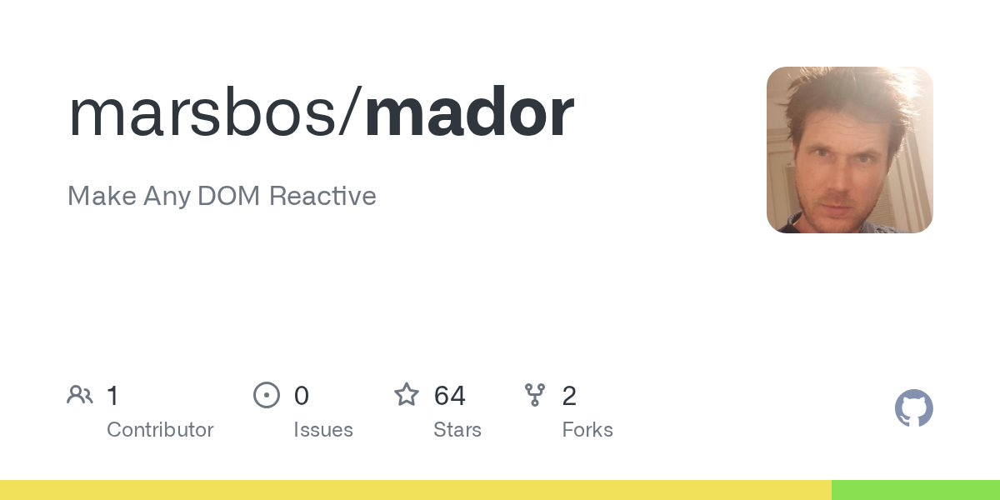
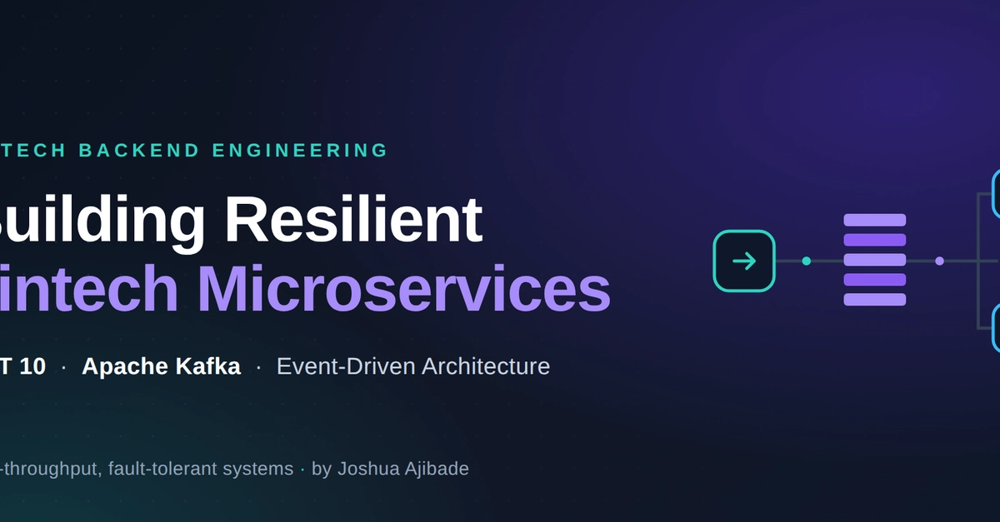
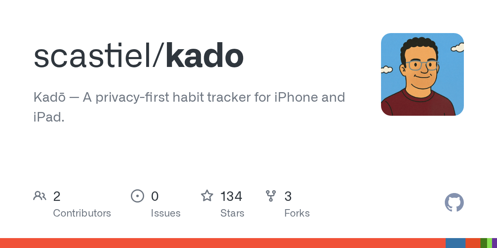
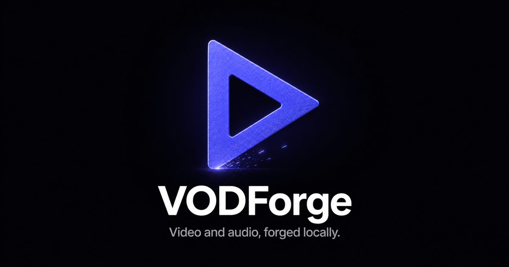

🔥 Top 3 (must read)
I got tired of re-recording broken tests, so I built my own testing tool
A developer spent two sprints in a row fixing recorded UI tests instead of shipping features. A checkout-flow test that broke on a small change was the last straw, so they built CueCast, a no-code web UI testing tool, and share what went wrong along the way. Why it matters: this is the exact pain of brittle E2E suites. Good input for your own Playwright and Maestro test strategy, and a small indie build story on top.

There's No Limit to How Bad Code Can Get
Zach Kehs argues that unlike a building, software has no natural limit. There can always be one more layer of indirection or one more slowdown. Simon Willison adds from experience that "burn it down and rewrite" almost never works once technical debt feels overwhelming. Why it matters: a short, sharp argument to bring to the next "should we rewrite this?" discussion with your team.
S
Research acceleration: The view inside OpenAI
OpenAI published a piece on how it uses its own models to speed up research work inside the company, together with an essay from its Chief Scientist on "recursive self-improvement". Simon Willison reads both and points out what they do and do not explain. Why it matters: a first-hand look at how a frontier lab has its own engineers and researchers work with AI agents day to day. Useful as a reference point when you plan AI adoption for your team.

🛠 Tools & releases
Why We Dumped Swagger UI for Scalar in Our Go Backend
a team replaced Swagger UI with Scalar for their OpenAPI docs. Scalar works from the same OpenAPI spec, so the same swap applies to Node.js APIs.

Show HN: Mador – Make any DOM reactive with a tiny 80-line Proxy state tuple
(discussion) — a very small library that uses a JavaScript Proxy to make plain DOM reactive. Nice for understanding how reactivity works under frameworks like React.

👔 Engineering & teams
There's No Limit to How Bad Code Can Get
see Top 3. Simon's point: the rewrite team gets pulled back onto the old system, and the new one never catches up.
S
Resilient Fintech Microservices: High-Throughput with .NET 10 and Apache Kafka
a walk-through of moving loan and transaction flows from synchronous calls to Kafka messaging, so message loss or timeouts do not cause duplicate charges. The stack is .NET, but the design lessons apply to any Node.js backend.

🎯 For me
Automation testing: the CueCast story (Top 3) is a direct match. The core lesson is that recorded tests break on small UI changes, so test design matters more than tooling.
Node.js APIs: the Scalar article. If your services already expose an OpenAPI spec, switching the docs UI is a one-hour change.
Web frontend: Mador is a good 80-line read to explain Proxy-based reactivity to the team.
💡 App ideas & indie builds
Kadō – open-source habit tracker with a non-binary habit score, for iOS
(discussion) — a habit tracker where a habit is not just "done or missed". It scores partial progress. The user problem: most trackers punish one missed day and people quit. Good example of one small idea that makes a crowded category feel fresh. Worth studying as a Flutter side-project shape.

VODForge – a free local desktop UI for YouTube video/playlist downloads
(discussion) — a desktop wrapper that puts a simple UI on top of command-line download tools. The user problem: powerful CLI tools that non-technical people cannot use. A "wrap a CLI in a friendly UI" pattern you can reuse for many tools.

Sol, a macOS music player and jukebox app, now free and open source
(discussion) — a local music player and jukebox for people who own their music files and do not want a streaming service. Shows there is still room for focused, single-platform desktop apps with a clear audience.
G
🎓 Try this
Take one Node.js service that already has an OpenAPI spec and point Scalar at it instead of Swagger UI. It is a small, low-risk change, and you can judge in one afternoon whether the nicer docs are worth rolling out to other services.